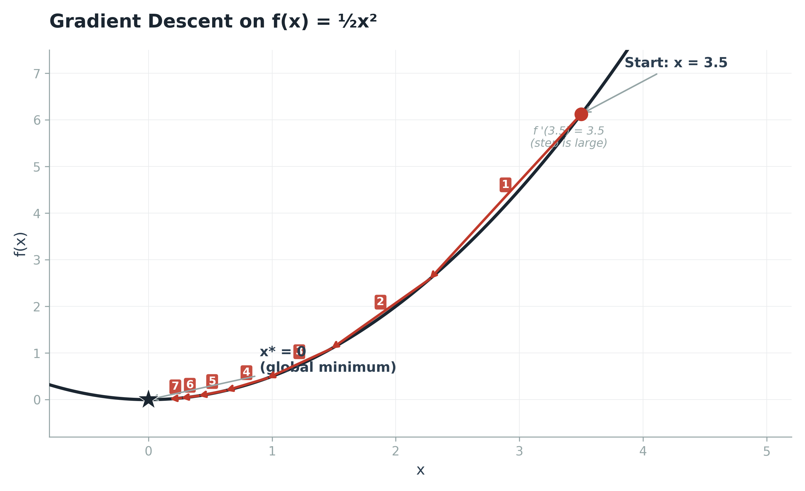
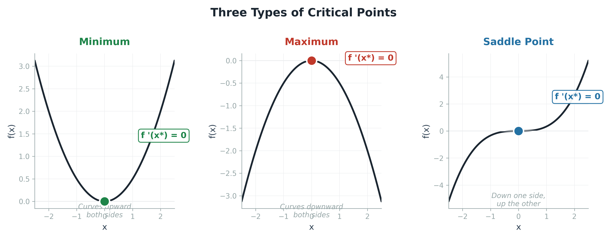
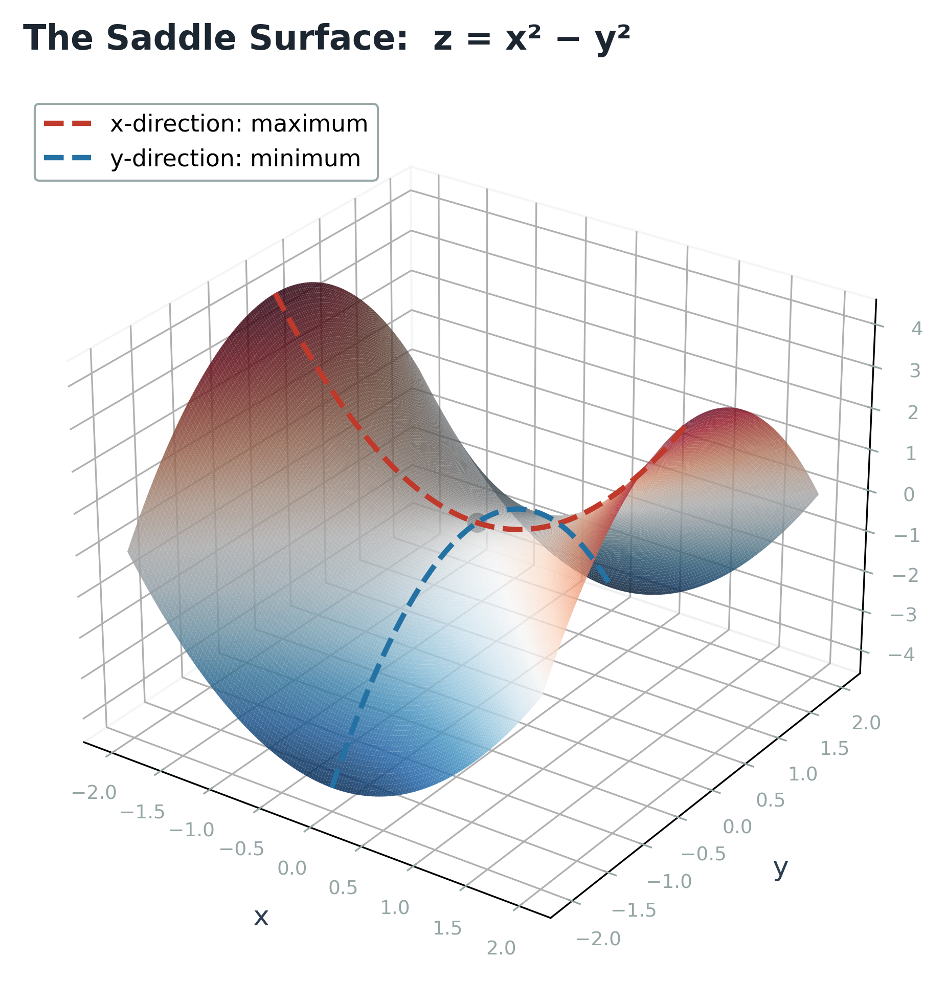
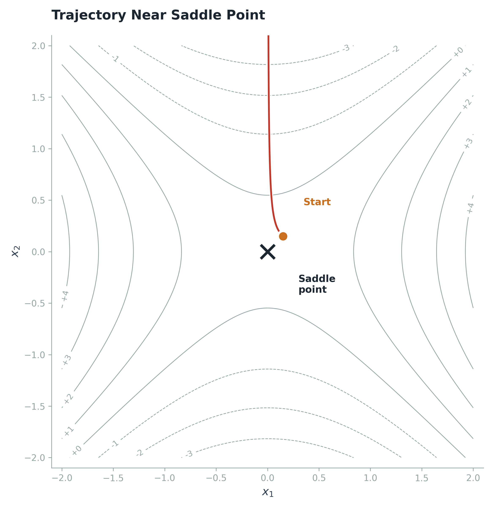
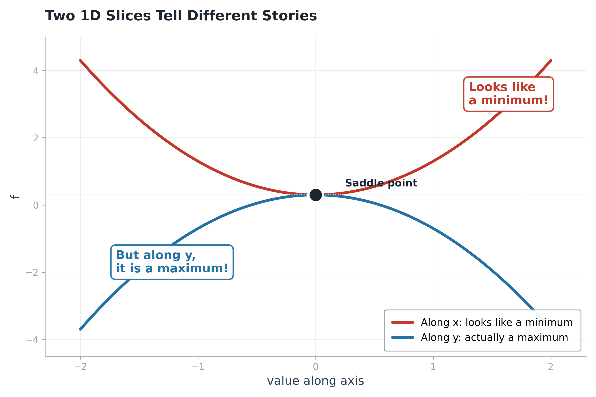
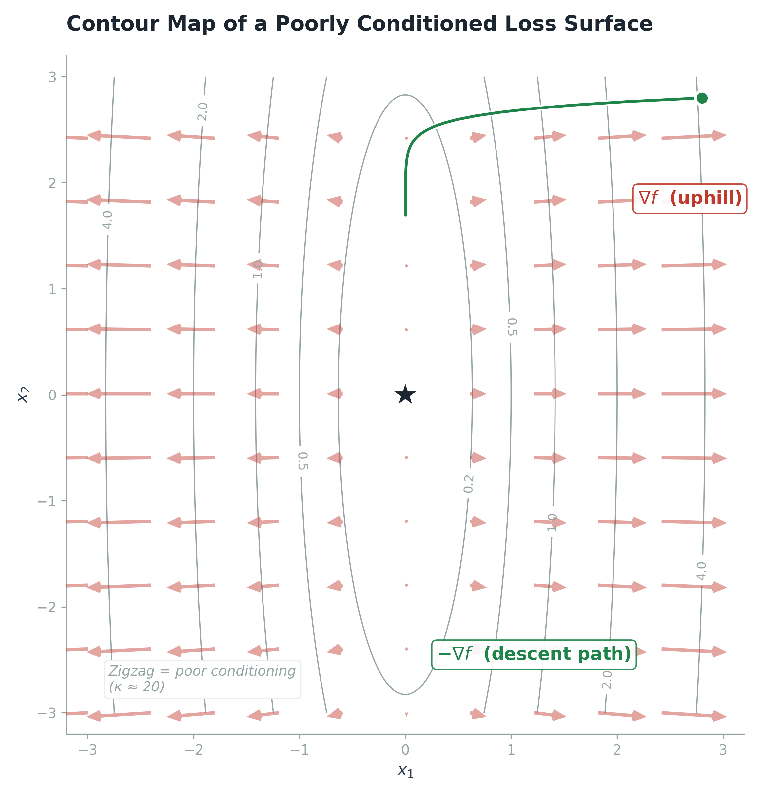
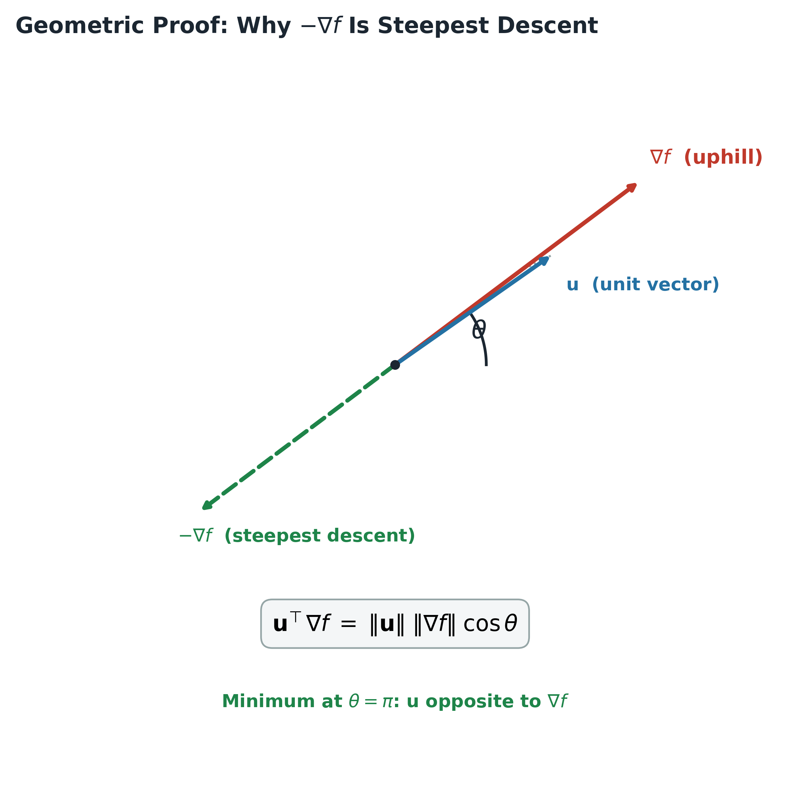
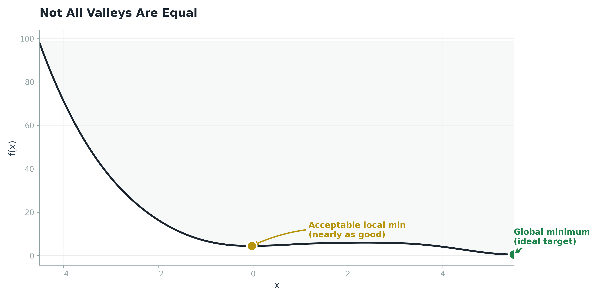
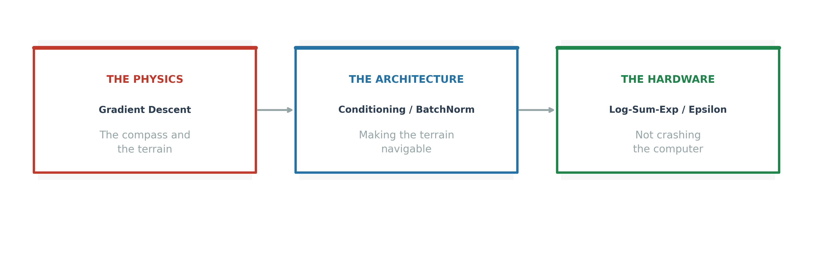

When Math Becomes Terrain
There is a moment in every deep learning researcher's education when the math stops being "formulas" and starts being "terrain." You stop seeing symbols on a page and start seeing a physical landscape that your model is physically walking through. That is the shift this section of Goodfellow's Chapter 4 forces you to make. Everything we have discussed so far, the numerical stabilization tricks, the conditioning fixes, is about to converge into a single, unified picture. You need to understand this picture because it is the foundation on which every optimizer in PyTorch, TensorFlow, and JAX is built.
The central problem is this: most deep learning algorithms involve optimization. Optimization means minimizing (or maximizing) a function $f(x)$ by altering $x$. In deep learning, $x$ is the vector of all your model's parameters, billions of weights and biases, and $f(x)$ is your loss function, the number that tells you how wrong your model is. We want to find the $x$ that makes $f(x)$ as small as possible. Goodfellow calls this value $x^*$, written formally as:
The function we are minimizing goes by many names: objective function, criterion, loss function, cost function, error function. Goodfellow uses these interchangeably. In practice, most ML practitioners say "loss function" or "cost function," but they all mean the same thing. The mathematical machinery for finding $x^*$ is called gradient descent, and understanding it is the single most important prerequisite for understanding why deep learning works at all.
The Derivative as a Compass
Goodfellow starts with the definition of the derivative. If $y = f(x)$, the derivative $f'(x)$ gives the slope of $f$ at point $x$. More precisely, it tells you how to scale a small change in the input to obtain the corresponding change in the output. This is captured by the first-order Taylor approximation, the equation that makes all of gradient-based optimization possible:
Read this equation carefully. It says that if you take a tiny step $\epsilon$ in the input space, the function value changes by approximately $\epsilon$ times the derivative. The derivative is a scaling factor. It tells you how sensitive the output is to input changes at this specific location. This is the foundation of everything. Now here is the critical insight for optimization: if the derivative $f'(x)$ is positive, the function is increasing. To make $f$ smaller, we need to move in the direction where $f'(x)$ is negative. If the derivative is negative, the function is decreasing, and we want to keep moving in that direction. In both cases, we move in the direction of the opposite sign of the derivative.
This technique is called gradient descent (Cauchy, 1847). You take small steps, each step proportional to the negative derivative, walking the function downhill. The diagram below shows this process on the simplest possible case, $f(x) = (1/2)x^2$. Starting from $x = 3$, each step moves closer to the global minimum at $x = 0$:

Figure 1 — Gradient descent on $f(x) = (1/2)x^2$. Each colored arrow is one step. The algorithm follows the derivative downhill.
Notice the sequence of arrow colors. The first step (red) is the largest because the derivative is largest at $x = 3$. As the algorithm approaches $x = 0$, the derivative shrinks, and the steps become smaller. This is a fundamental property of gradient descent: it naturally decelerates as it approaches a minimum. The derivative acts as a compass that not only points the right direction but also tells you how steep the hill is, so you take smaller steps on gentle slopes and larger steps on steep ones. This self-regulating behavior is both a strength and a weakness, as we will see.
Critical Points: Three Fates
When $f'(x) = 0$, the derivative provides no information about which direction to move. Points where the derivative is zero are called critical points or stationary points. There are exactly three things that can happen at a critical point, and your optimization algorithm's fate depends entirely on which one it encounters. The diagram below shows all three side by side:

Figure 2 — The three types of critical points. All share $f'(x^*) = 0$, but only the minimum is a valid stopping point.
Local Minimum
A local minimum is a point where $f(x)$ is lower than at all neighboring points. The derivative is zero, and the function curves upward on both sides. This is the type of critical point we want. When gradient descent arrives here, it has nowhere else to go. The problem is that a local minimum is not necessarily the global minimum. The function might have a lower value somewhere far away, but gradient descent cannot see it because it only looks at local slope information. In the context of deep learning, we generally accept local minima that are "good enough," meaning the loss is very low even if not theoretically minimal.
Local Maximum
A local maximum is the mirror image. The derivative is zero, the function curves downward on both sides, and $f(x)$ is higher than all neighbors. Gradient descent naturally avoids maxima because the negative gradient points away from them. You would only get stuck at a maximum if you were doing gradient ascent (maximizing) instead of descent. In practice, maxima are rarely a problem for minimization algorithms.
The Saddle Point: The Real Villain
The third type is the most dangerous, and Goodfellow flags it explicitly: "Some critical points are neither maxima nor minima. These are known as saddle points." In one dimension, a saddle point is an inflection point: the derivative is zero, but the function decreases on one side and increases on the other. But in high dimensions, saddle points become genuinely treacherous. A saddle point in multiple dimensions looks like a mountain pass: it curves upward in some directions (like a maximum) and downward in others (like a minimum).
The reason saddle points are the real enemy, more so than local minima, is a matter of probability. In a function with billions of parameters, a critical point where every direction curves upward (a true local minimum) requires an enormous coincidence. But a saddle point, where some directions curve up and others curve down, is geometrically far more likely. Modern research has confirmed that in high-dimensional loss landscapes, saddle points vastly outnumber local minima. Your optimizer is far more likely to get stuck at a saddle point than trapped in a local minimum.

Figure 3 — The classic saddle surface $z = x^2 - y^2$. Along the x-axis it curves up (maximum). Along the y-axis it curves down (minimum).
The 3D surface above shows $z = x^2 - y^2$. Look at the origin. Along the $x$-direction, the surface curves upward: you are at a local maximum. Along the $y$-direction, the surface curves downward: you are at a local minimum. You are simultaneously at a maximum in one direction and a minimum in another. That is the saddle point. The gradient is zero, so gradient descent stops. But you are not at the bottom of anything. You are stuck on a flat ridge, a mountain pass, with better solutions available if only you could find a direction to move.

Figure 4 — Gradient descent trajectory near a saddle point. The path crawls along the flat region where the gradient is nearly zero.
The contour map above shows the trajectory of gradient descent starting just $0.15$ units away from the saddle point at the origin. The red path crawls along the flat region where the gradient magnitude is tiny. Compare this to the bold, decisive steps in Figure 1: here the algorithm barely moves, because the slope in every direction is nearly zero. In a billion-parameter network, this manifests as a loss plateau that persists for hundreds of training iterations.

Figure 5 — Two 1D slices through the saddle point at the origin. The red curve (along x) looks like a minimum. The blue curve (along y) reveals it is actually a maximum in that direction.
These two curves are the same function, $f(x, y) = x^2 - y^2$, sliced along each axis independently. The red curve along $x$ is a parabola opening upward: if this were the whole story, you would correctly conclude you are at a minimum. But the blue curve along $y$ opens downward: you are simultaneously at a maximum. This is the fundamental danger of saddle points. A 1D slice hides the truth. Without examining all dimensions simultaneously, you cannot distinguish a saddle point from a minimum. This is why 1D intuition fails catastrophically in high dimensions.
The Gradient Vector: A Billion-Dimensional Compass
In deep learning, we do not optimize a scalar function of one variable. We optimize a scalar function of potentially billions of variables (all the weights and biases in a transformer, for example). The function is $f: \mathbb{R}^n \to \mathbb{R}$. It takes an n-dimensional vector as input and produces a single scalar output (the loss). For optimization to make sense, there must be only one output. The concept of the derivative generalizes to multiple dimensions through the partial derivative and the gradient.
The partial derivative of $f$ with respect to $x_i$ measures how $f$ changes when only the variable $x_i$ increases, holding all others constant. The gradient is the vector containing all the partial derivatives, a stack of n slopes, one for each input dimension:
In one dimension, the gradient is just the scalar derivative. In n dimensions, it is an n-dimensional vector. Each component tells you the rate of change of the loss with respect to that specific parameter. If the i-th component is large and positive, increasing the i-th parameter will dramatically increase the loss, and decreasing it will dramatically decrease the loss. The gradient is your compass, and in high dimensions it has billions of needles, each pointing in the direction of steepest ascent for its corresponding parameter.
The diagram below shows this in two dimensions. The gray contour lines connect points of equal loss (like topographic elevation lines on a map). The red arrows show the gradient pointing uphill, and the green path shows gradient descent walking downhill toward the minimum:

Figure 6 — A contour map of a poorly conditioned loss surface (elongated bowl). Red arrows = gradient (uphill). Green path = descent trajectory. Notice the zigzagging — this is the canyon problem from the conditioning blog.
This contour map is not a coincidence. I deliberately chose an elongated bowl, where one direction has a much steeper gradient than the other. This is the visual signature of poor conditioning that we discussed in the previous blog. The eigenvalue ratio of the Hessian matrix of this function is large, meaning the condition number is large. Look at the green descent path: it does not go straight to the minimum. It zigzags back and forth, sloshing across the narrow walls of the canyon, taking far more steps than necessary. This is not a bug in the algorithm. This is exactly what the condition number theorem predicts. The gradient in the steep direction ($x_1$) is large, so the algorithm takes a big step and overshoots. The gradient in the flat direction ($x_2$) is tiny, so the algorithm takes a microscopic step and barely moves. The result is oscillation.
Proof: Why Negative Gradient Is the Fastest Way Down
Goodfellow does not just state that gradient descent works. He proves it. The proof relies on the concept of the directional derivative and a beautiful piece of vector geometry. Here is the argument, step by step.
We want to move in the direction that decreases $f$ the fastest. Let $u$ be a unit vector (a direction). The directional derivative of $f$ in direction $u$ measures the slope of $f$ along that direction. By the chain rule, it equals the dot product of $u$ with the gradient:
To find the steepest descent direction, we want to minimize this directional derivative over all possible unit vectors $u$. We rewrite the dot product using the definition: the dot product of two vectors equals the product of their magnitudes times the cosine of the angle between them:
Since $u$ is a unit vector, its magnitude is $1$. The gradient magnitude does not depend on $u$. So the only variable term is the cosine of $\theta$, the angle between $u$ and the gradient. To minimize the whole expression, we need to minimize the cosine of $\theta$. The minimum value of cosine is $-1$, which occurs when $\theta = \pi$ ($180$ degrees). This means $u$ must point in the exact opposite direction of the gradient. The diagram below shows this geometry:

Figure 7 — The geometric proof. The directional derivative $u^T \nabla f(x)$ equals $\|u\|_2 \|\nabla f(x)\|_2 \cos\theta$. Minimum when $\theta = \pi$: $u$ opposite to gradient.
This is one of the most elegant results in optimization theory, and it deserves to be understood geometrically, not just algebraically. The gradient points directly uphill. The negative gradient points directly downhill. There is no other direction that will decrease the function faster. This is not an approximation. This is not a heuristic. This is a mathematical theorem. Any other direction you choose will have a smaller (less negative) directional derivative, meaning a shallower descent. The negative gradient is the steepest descent.
The actual update rule for steepest descent follows immediately. We move from the current point $x$ in the direction of the negative gradient, scaled by a positive scalar $\epsilon$ called the learning rate:
The learning rate $\epsilon$ controls the size of each step. Set it too large and you overshoot the minimum, potentially diverging. Set it too small and convergence takes forever. Choosing $\epsilon$ is one of the most important practical decisions in training a neural network, and entire research programs have been dedicated to adaptive learning rate algorithms (Adam, AdaGrad, RMSProp) that adjust $\epsilon$ automatically during training. Goodfellow notes several strategies for choosing $\epsilon$: keeping it constant, solving for the step size that makes the directional derivative vanish, or performing a line search that evaluates $f$ at multiple candidate step sizes and picks the best one.
Not All Valleys Are Equal
Goodfellow makes a point that separates practical machine learning from theoretical optimization: "We therefore usually settle for finding a value that is very low, but not necessarily minimal in any formal sense." In theoretical optimization, you want the global minimum, the absolute lowest point on the entire loss surface. In deep learning, that is usually impossible to guarantee. Your loss surface might have millions or billions of local minima, and finding the single best one among them is NP-hard in general.
But here is the saving grace that makes deep learning work at all: not all local minima are equally bad. The diagram below shows a function with three local minima of very different quality:

Figure 8 — Three local minima, three fates. The global minimum (green) is ideal but hard to guarantee. The acceptable minimum (yellow) is nearly as good. The poor minimum (red) should be avoided.
The green point is the global minimum: the lowest value of $f$ anywhere on the curve. The yellow point is a local minimum that is nearly as good as the global one. If gradient descent stops here, your model performs almost as well. In practice, deep learning models routinely settle into these "good enough" local minima and achieve state-of-the-art performance. The red point is a local minimum that performs poorly. If gradient descent stops here, your model is significantly worse than optimal. This is the kind of local minimum you want to avoid.
The remarkable empirical fact about deep learning is that, despite the astronomical number of local minima in a billion-parameter loss landscape, gradient descent with stochastic mini-batches and momentum almost always finds a good local minimum. The reasons for this are still an active area of research, but one leading theory is that the loss surfaces of neural networks have a special geometry: most local minima are clustered near the global minimum in terms of loss value, so "getting stuck" usually means getting stuck somewhere that is still pretty good. Saddle points, not bad local minima, are the primary obstacle to faster convergence.
Three Domains, One Problem
We have now covered three subtopics from Chapter 4 of Goodfellow's Deep Learning book, and they are not three separate topics. They are three lenses on the same problem. The moment you see the connections between them, you stop being a student who memorizes formulas and start being an engineer who understands systems.

Figure 9 — The unified picture. The physics (how we move), the architecture (what the terrain looks like), and the hardware (how we compute) are one problem.
The Physics is gradient descent itself: the compass, the terrain, the act of walking downhill. This is the optimization algorithm that every neural network uses. When $f'(x) = 0$, the compass breaks. When the terrain is a saddle point, the compass says "flat" but you are not at the bottom. When the terrain is poorly conditioned, the compass points in the right direction but the step sizes are catastrophically wrong in some dimensions.
The Architecture is how we reshape the terrain to make optimization feasible. Batch Normalization re-centers and re-scales the data at every layer, keeping the eigenvalues clustered (low condition number) so the terrain stays roughly circular instead of stretching into canyons. Residual connections add an identity shortcut that keeps the condition number near 1, preventing the landscape from degenerating as depth increases. L2 regularization floors the smallest eigenvalues so the Dwarf in our tug-of-war analogy never goes to zero. These are not tricks. They are engineering solutions to a precise mathematical problem.
The Hardware is how we compute the movement without crashing the computer. The log-sum-exp trick prevents underflow and overflow when computing softmax. The epsilon constant in BatchNorm prevents division by zero. The shift invariance of softmax prevents NaN propagation. Without these numerical stabilization techniques, the physics and architecture are irrelevant because the computation itself would fail. You cannot walk downhill if the computer returns NaN for every step.
Goodfellow writes: "All of this makes optimization very difficult, especially when the input to the function is multidimensional." This single sentence encapsulates the entire field. The difficulty comes from three sources simultaneously: the terrain has saddle points (not just minima), the terrain is poorly conditioned (canyons instead of bowls), and the computer has finite precision (rounding errors that compound). Understanding all three is what separates someone who can train a model from someone who can understand why it trains.
C++ Implementation: Gradient Descent on a Saddle
Below is a C++ implementation that demonstrates two things simultaneously: the mechanics of gradient descent, and the saddle point problem. The function is $f(x, y) = x^2 - y^2$, the same saddle surface we visualized earlier. The gradient is $(2x, -2y)$. Notice that at the origin $(0, 0)$, the gradient is exactly $(0, 0)$, so gradient descent halts. But this is a saddle point, not a minimum. The code also shows how to detect this situation by examining the Hessian matrix.
#include <iostream>
#include <vector>
#include <cmath>
#include <iomanip>
using namespace std;
// ─── Saddle function: f(x,y) = x^2 - y^2 ───
// Global minimum does NOT exist (goes to -inf
// along the y-axis). The origin is a saddle point.
//
// Gradient: df/dx = 2x
// df/dy = -2y
// Hessian: [[2, 0],
// [0, -2]]
// Eigenvalues: +2 and -2 (mixed signs = saddle)
struct Point { double x, y; };
double f(const Point& p) {
return p.x * p.x - p.y * p.y;
}
Point gradient(const Point& p) {
return { 2.0 * p.x, -2.0 * p.y };
}
// Returns the two eigenvalues of the 2x2 Hessian.
// For f = x^2 - y^2 the Hessian is diagonal,
// so eigenvalues are simply the diagonal entries.
pair<double, double> hessian_eigenvalues() {
return { 2.0, -2.0 };
}
// ─── Gradient Descent ───
Point gradient_descent(Point start, double lr, int max_iter) {
Point p = start;
cout << fixed << setprecision(6);
cout << "Iter | x | y | f(x,y) | |grad|" << endl;
cout << "-----|------------|------------|-------------|----------" << endl;
for (int i = 0; i < max_iter; i++) {
Point g = gradient(p);
double gnorm = sqrt(g.x*g.x + g.y*g.y);
cout << setw(4) << i << " | "
<< setw(10) << p.x << " | "
<< setw(10) << p.y << " | "
<< setw(11) << f(p) << " | "
<< setw(8) << gnorm << endl;
// Stop if gradient is near zero (critical point)
if (gnorm < 1e-8) {
cout << "\n>> Converged to critical point at ("
<< p.x << ", " << p.y << ")" << endl;
// Check Hessian to classify the critical point
auto [lam1, lam2] = hessian_eigenvalues();
if (lam1 > 0 && lam2 > 0)
cout << ">> Hessian eigenvalues: "
<< lam1 << ", " << lam2
<< " -> LOCAL MINIMUM" << endl;
else if (lam1 < 0 && lam2 < 0)
cout << ">> Hessian eigenvalues: "
<< lam1 << ", " << lam2
<< " -> LOCAL MAXIMUM" << endl;
else
cout << ">> Hessian eigenvalues: "
<< lam1 << ", " << lam2
<< " -> SADDLE POINT (mixed signs!)"
<< endl;
break;
}
// Update: move opposite to gradient
p.x -= lr * g.x;
p.y -= lr * g.y;
}
return p;
}
int main() {
cout << "=== Scenario 1: Start at (0.1, 0.1) ===" << endl;
cout << " (Near the saddle, both components small)" << endl;
gradient_descent({0.1, 0.1}, 0.05, 200);
cout << "\n\n=== Scenario 2: Start at (2.0, 0.5) ===" << endl;
cout << " (Far from origin, x-dominant)" << endl;
gradient_descent({2.0, 0.5}, 0.05, 200);
return 0;
}
There are several things to notice in this code. First, the gradient descent update in the loop is the exact C++ translation of Equation 8: p.x -= lr * g.x. The learning rate lr plays the role of epsilon. Second, the convergence check uses the gradient norm: if the gradient magnitude drops below 1e-8, we declare convergence. This is the standard practical criterion. Third, and most importantly, the code does not just stop at the critical point. It classifies the critical point by examining the Hessian eigenvalues. This is the second-derivative test from calculus: if both eigenvalues are positive, you are at a local minimum. If both are negative, a local maximum. If they have mixed signs, you are at a saddle point. The eigenvalues are +2 and -2: mixed signs, confirming the saddle.
When you run Scenario 1, starting near $(0.1, 0.1)$, the algorithm moves slowly because both gradient components are small. The x-component ($2x = 0.2$) pulls toward $x = 0$, while the y-component ($-2y = -0.2$) pushes y away from zero. The algorithm converges to the saddle, and the Hessian check correctly identifies it. In Scenario 2, starting at $(2.0, 0.5)$, the x-gradient is large ($4.0$) and dominates, pulling x rapidly toward zero, while y slowly drifts away. The trajectory is heavily influenced by which dimension has the stronger gradient, a direct analog of the conditioning problem from the previous blog.
In a real neural network, the function is not a simple saddle surface. It is a billion-dimensional landscape with millions of saddle points, each surrounded by flat plateaus. The gradient norm approaches zero near these saddles, and the algorithm slows to a crawl. Modern optimizers like Adam add momentum (a running average of past gradients) and adaptive learning rates (dividing each parameter's update by its historical gradient magnitude) specifically to escape saddle points faster. But the fundamental problem, that the gradient is zero at the saddle, remains. The mathematics does not care about your optimizer. The compass is blind at the critical point, and no amount of engineering can change that. The best we can do is make the compass more sensitive and add momentum so we coast through the flat regions.